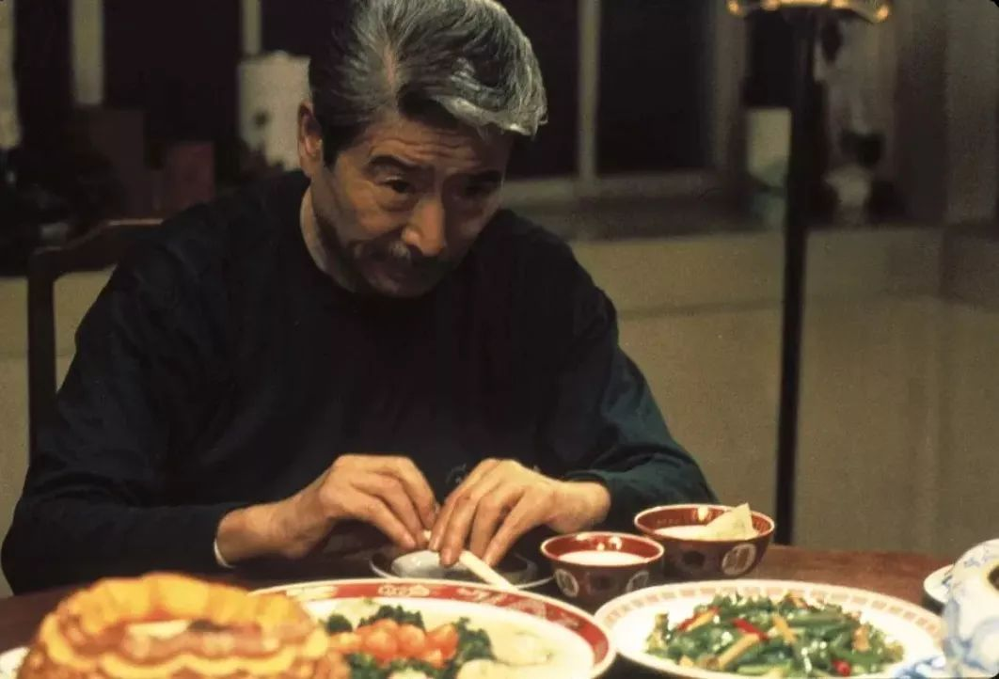

一名重症患者家属的自白
原文链接 备份链接 “ - 疫 情 之 下 - 看到爸爸如此坚强的内心和乐观的心理状态，我也充满了信心。 ” 故 事 练 习 生 习 作 第 58 篇 1月20日晚间，钟南山院士对“新型肺炎人传人”的一句肯定，让全国各地陷入对病毒 …

“
- 疫 情 之 下 -
父亲作为一家之主，把家里卖粮食的一万多块钱当做货款结给了供应商，按照他交代给我们的原话：“咱们已经吃亏了，就不要再让别人吃亏了，也让人家回家好好过个年。”
”
故 事 练 习 生 习 作
第 59 篇
1
2020年春节的前几个月，在老家务农的父亲早早地便打了电话给我。接到电话的时候，我正在厨房热火朝天地忙碌着。父亲在电话里说他过年的时候接了几场宴席，想让我回去帮忙。
父亲沙哑的声音在电话那头解释道：“老爸年纪大了，一个人操办不起来，请人的话就赚不到什么钱，想着让你过年的时候回来帮我一把。”
我点点头，答应了父亲最近会把辞职信交上去。做餐饮行业的想回家过次年，那就只能把工作辞了，更何况这几年在上海也没怎么赚到钱，同行也都说做包厨的生意也不错，专门接农村的结婚宴、满月酒、升学宴等等，就想着回去跟父亲学一学，试一试自己能不能做的下来。
一个月后，辞职的流程也在元旦的时候被审批了下来，我收拾好宿舍的行李，买了当天的高铁票，终于踏上了好些年没有回去过的故乡安徽之路。
我靠在高铁的椅背上，思想放空，脑海里渐渐回想起小时候父亲四处给别人做乡厨的日子。
我们那边的农村哪家要是有了红白喜事，需要有人来掌勺，往往都会来找我父亲过去帮忙。父亲年轻的时候出去学过几年厨，做起饭来还是有滋有味的。办事的时候支起两三个土灶，有同村的阿姨过来帮忙洗菜、切肉，打杂的人便去各家各户去借桌子、板凳和碗筷。而像我一样的小孩子，帮不上什么忙，只好扎堆猫在一旁，时不时从桌上抓一把花生米分来吃。
父亲做这些是不收钱的，纯粹是为了帮忙，他说：“乡里乡亲的谈钱就生分了，大家同村一家姓就是亲人，帮亲人的忙怎么能收钱。”不过主人家也会给父亲两三包香烟，父亲不会拒绝这个，笑呵呵收下了。
我还小，问父亲，“爸，干嘛不要钱啊，那样不就能买好多烟和棒棒糖嘛。”父亲笑了笑，摸着我的头说：“你还小，什么事也不能全用钱来衡量，收钱和收烟是两码子事儿。”
“收下了烟，主人家就记下了我们这份人情，日后我们有了困难，他们也会帮我们的，这可是钱远远比不上的。”我半知半解地点点头，缠着父亲去商店里买棒棒糖吃。
靠在椅背上睡了一觉，醒来几个小时的时间恍然而去，上车便提前给父亲打了电话，父亲掐着时间早早的便开车在高铁站附近等我回来，我拖着行李箱出站时，远远的便看见了父亲朝着我招手。
父亲帮忙拎着行李箱上了车，转身嘿嘿一笑道：“好久不见，儿子是不是瘦了好多。”我对着车上的后视镜，摸了摸自己的脸，“没有啊，还是原来的体重没有变过。”我问父亲给别人办的都是些什么事，父亲笑了笑：“都是喜事，积德的好事情。”
回到家里，我的屋子也打扫的干干净净的，母亲正在厨房里忙碌着，看见我回来也是一脸的欣喜。
吃完饭后，父亲把之前承接的农村宴席的单子拿过来给我看一眼，大概年前加年后四五场，一场摆个十几桌。父亲盘算着，辛苦这段日子也能挣个一两万块钱，他有做这个的经验，早把这些事情安排得妥妥当当。我只要跟在他后面，跟着他一起做事情就可以了。
而母亲有着农村生活的精打细算，被安排采购菜品。父亲也提早租了一个冰柜，放一些加工好的半制成品。

2
年前，父亲带着我做了一两场结婚宴，虽然起早贪黑的忙碌有些辛苦，但总体大家的反应都还不错，都夸我继承了老爸的手艺，把这个菜做的有滋有味的，有好事的叔叔阿姨还趁着这个机会，要给我介绍对象，我蹲坐在炉火旁脸上红扑扑的，父亲则是在一旁抽着烟道：“劳烦他姨费点心了，”说完后脸上的笑容怎么也藏不住。
一月的中旬，父亲与供货商已经商量好了春节备的货，而我自告奋勇帮父亲去检查菜品的质量，看有没有偷奸耍滑的。父亲嗤之以鼻：“也就城里人喜欢干这样的事，农村里他这样做试试，一辈子都别想要有生意来了。”
我不相信父亲说的，赌气地检查了一遍，发现这些菜品质量都还不错，给的分量也比我们下的订单要足。
各种新鲜蔬菜、鸡蛋、鲜肉，以及肉制品，临近春节这些东西的价格都有较大幅度的上涨，而且春节供货商也要休息几天，父亲先把定金付给了供货商，供货商来准备。往年像我在饭店工作，准备春节备货，准备的数量可比父亲要多得多。
母亲开玩笑道，家里面已经变成了菜市场，今年也不用准备自家用的年货了。土豆、洋葱、萝卜等等，这些容易存放的蔬菜尽可能的都放在了家里，五花肉、蹄髈、牛羊肉等等都塞在了冰柜里贮存。
年前几天，新闻上开始大肆报道冠状病毒感染的事情，父亲坐在门槛端着碗筷一脸的不以为然，我也没放在心上，想着只不过是几例而已，以中国如此强盛的国力，很快就能控制住了。
父亲说说笑笑，想着这个鼠年的第一桶金很快就能赚到自己的手上。
1月24日，在天津工作的姐姐也回来了，全家人都聚在了一起准备年夜饭，父亲原本也高高兴兴地处理着一条草鱼，忽然一通电话就打了进来。父亲把手里的活丢给我，自己洗干净手接电话去了。
我正在刮着草鱼的鳞片，不一会，眉头有些紧皱的父亲叼着了一根烟走了过来，声音沙哑道：“刚才隔壁村的老王打电话，把他家初五的满月酒取消了。”我疑惑问道：“因为最近那个病毒性肺炎吗？他们家有孩子小心谨慎一点是对的。”
我掏出手机上网查了查消息，才知道武汉昨天已经封城了，我慌忙把这个消息告诉父亲，父亲的眉头拧得更加紧了，我安慰父亲道：“武汉离得远，影响不到我们这里，没事的。”紧接着，下面一条热搜，十几个省市启动了一级公共卫生响应，我点进去翻一翻名单，赫然看到安徽也在其中一列。
这下子一下坐不住了，感觉到事态的严重性，我爸开车立马带着我们去镇上采购口罩、消毒水等防护物资，大型的超市里，挤得满满当当的，全是人，都是来抢购口罩的。
我们逛了一圈，还是从熟人那买到了一些口罩和消毒水。虽然别人家的酒席不办了，自己家的年夜饭还是要吃的，父亲晚上亲自下厨操办了年夜饭，这放在平时，可是一点都不多见。

3
大年初一，我猫在被窝里看着新闻，感染人数不断上升，父亲在屋子里走来走去，一会站着一会坐着，地上的烟屁股扔了也有七八个。
父亲咬咬牙，下了决定。
他主动联系了还没有退订的几户主人家，跟他们讲明了利害关系，说服他们取消了订的酒席。母亲埋怨父亲道，钱还没有见到，还搭进去不少。父亲反驳道：“赚钱再重要，那也不能拿生命去开玩笑。”
“民以食为天，食以安为先。”这是我学厨时，师傅教给我的，现在连吃饭的环境都不安全，强行办这个酒席，不是害人家么？父亲有些激动，而我记得我入门师傅也曾这样教过我，如今从父亲的嘴里说出来，更好像是一种精神上的传承。
父亲不善言辞，但说的每一句话都很有道理，做起事情来又非常耿直善良，之前人家已经送过来的桌椅板凳、餐具，他又打电话说好话托人家拉了回去，而且这个钱一分也没有少付给人家，按原价照付。之前拜托供应商准备好的蔬菜、牛羊肉、鸡蛋也按父亲之前的要求完成了。
可如今订桌已经全部取消了，这些准备的原材料已经没有了用武之地，这件事是母亲一手操办的，原本想和人家商量退回去，可人家也着急拿着这个钱回家过年，而且过年关市了人家也没法处理。
父亲作为一家之主，把家里卖粮食的一万多块钱当做货款结给了供应商，按照他交代给我们的原话：“咱们已经吃亏了，就不要再让别人吃亏了，也让人家回家好好过个年。”
母亲有些着急，瞧见满院子的东西就发愁，接下来几天，父亲想戴着口罩出门，开车给亲朋好友送一点过去，可随着疫情的严重，村委会已经接到了防护疫情的重要通知，把进出村庄的道路堵了个严严实实，出入都要量体温登记且限制人数，父亲还没有出村口就被关卡拦下来劝返了。
七八箱鸡蛋，百余斤各式各样的新鲜蔬菜，家里也没办法吃掉，眼看着就要坏在了手上，损失惨重。
村里的支书上门家访的时候，了解到父亲主动把酒席退了，原材料没法处理的这个情况，赞扬父亲的做法是对的，避免了人群的聚集，又特意叮嘱让我们把东西都拿到村委会门口去，他在喇叭里号召大家帮帮我们家里的忙。
村里人通过平日的相处都清楚父亲的为人，也乐意帮父亲这个忙，降低一下我们家的损失。而父亲戴着口罩摇身一变 从农民变成了菜农，他把价格定的非常公道，比市场价要低个一两毛钱。
我忙了一上午，给叔叔阿姨们称鸡蛋，父亲还特意回家一趟，把之前家里买到的口罩拿出一些，见谁出来了没有及时的戴上口罩，硬要往他手里塞上几个才罢休。

4
往后的几天，村里的各个路口严防死守，不让车辆进出，甚至连年后赶回来祭祖的村里人，村长和书记专门划了一间空房屋让他们住，苦口婆心劝说他们不要去祭祖，人群聚集多，风险大，让他们安心度过14天的隔离期。
小小的村落里显得冷冷清清，往年聚在一起嗑瓜子，打牌的年轻人，都窝在家里看电视，打游戏。偶尔路上有些许行人，脸上紧密的戴着口罩步伐匆匆。
我父亲忙碌一辈子习惯了，突然这么闲下来也不自在，他总想去田里看看麦子长得怎么样，下了雪天气冷有没有冻着麦根。我劝说父亲不要出门，安心的待在家里，虽然村子里目前没有病例，但难保出什么意外。
03年非典，我还小，才三岁刚刚学会走路。但村里的老经历过，村子里弥漫着淡淡的醋味，老人坚信熏醋可以杀灭空气的冠状病毒，村里时不时还有调皮的小孩放着擦炮，五毛钱一盒的黑蜘蛛，醋味和鞭炮爆裂后的火药味融合，空气中似乎充满了未知的危险。
农历初五，按照老家的规矩向来有迎财神的习俗，村长初四便戴着口罩挨家挨户通知不准出门，我长年离家，倒是对这些风俗不是很了解，母亲有些发愁，“这门不开，财神怎么进的来啊。”
父亲见母亲不开心，拿着我打趣，“原来趁你回来还要给你见几个小姑娘，认识认识，看来这下也落空了。”我一脸囧样，母亲却捂着嘴偷着笑。
父亲拍了拍我的肩膀叹息道，“给你攒的彩礼钱也落空了。”我递给父亲一支烟，“我不想结婚那么早，你们不要太操心这个，等这疫情过去了，我再去上海闯一闯。”
我姐在旁边磕着瓜子笑着说：“老弟，发达了，别忘了姐姐我啊。”爸妈听着也笑了起来，一家人的笑声仿佛驱散了近几日的阴霾。
疫情无情，人间有情，希望这个冬天快点过去。
-END-
- 我 是 故 事 练 习 生 -
//厨师一枚，不想当作家的厨子不是好厨师，
生活在平凡的世界里，拥有着有趣的灵魂。//
作者 | 浩秋，青年作者。
图片 | 《饮食男女》剧照。
华中科技大学出版社·武汉战“疫”数博馆
抗击新型冠状病毒感染肺炎疫情作品资料正在征集中——
【征集要求】
＊来稿应为未公开发表和出版的内容，题材不限，
VLOG、文字、图片等均可，务必客观真实，
反映疫情当下的民生现况及个人见闻；
＊提供作品者都将获得华中科技大学出版社提供的“宅家悦读大礼包”；
＊作品一旦录用，将提供完整规范的版权保护。
【投稿方式】
音视频：2279281426@qq.com
文字：423322329@qq.com
图片：454578039@qq.com
或点击下方链接直接投稿
http://2019ncov.xiushewang.com/
请务必留下真实姓名及详细联系方式。
“我故”故事练习生培养计划，详情请戳：

About us
主编：鹿｜本期编辑：鹿
Contact us
投稿/商务合作/咨询
微信后台留言 or 邮箱：wmsygsdr@163.com
**我们是有故事的人｜华中科技大学出版社官方故事平台**
原文链接 备份链接 “ - 疫 情 之 下 - 看到爸爸如此坚强的内心和乐观的心理状态，我也充满了信心。 ” 故 事 练 习 生 习 作 第 58 篇 1月20日晚间，钟南山院士对“新型肺炎人传人”的一句肯定，让全国各地陷入对病毒 …
原文链接 备份链接 “ - 疫 情 之 下 - 疫情过后，你最想见的人是谁，最想做的事是什么？我想，等疫情过后，我最想见的人就是我的妻子和女儿，我想牵着你们的手，去我工作和生活的城市看一看，去吃一碗热干面，去江汉路上走一走，去看樱花盛开， …
原文链接 备份链接 以下文章来源于南风窗 ，作者何焰 一堆堆高土、一捆捆树桩、一台台挖机、一辆辆卡车横在各个村庄的村口，一个个交警守在城区、乡镇各个紧要路口。蕲春县的村村「封」，像铁桶一样严密。 本文转载自「南风窗」， …
原文链接 备份链接 以下文章来源于AI财经社 ，作者AI财经社作者 开工前最忧伤的段子可能是，“今天戴着口罩去买口罩，口罩没买到，还损失了一个口罩。” 2月10日起，部分企业陆续复工，宅在家里即为国家做贡献的使命宣告终结。当下的主要矛 …
原文链接 备份链接 采访、撰文 | 赵力 封 | 母亲反复清洗的棉质口罩 投稿邮箱 | gayspot_edit@163.com 1月31日，早上五点多，武力就醒了。他能听见隔壁母亲起床窸窸窣窣的声音。 他知道七点一过，父亲会是这个家里第 …